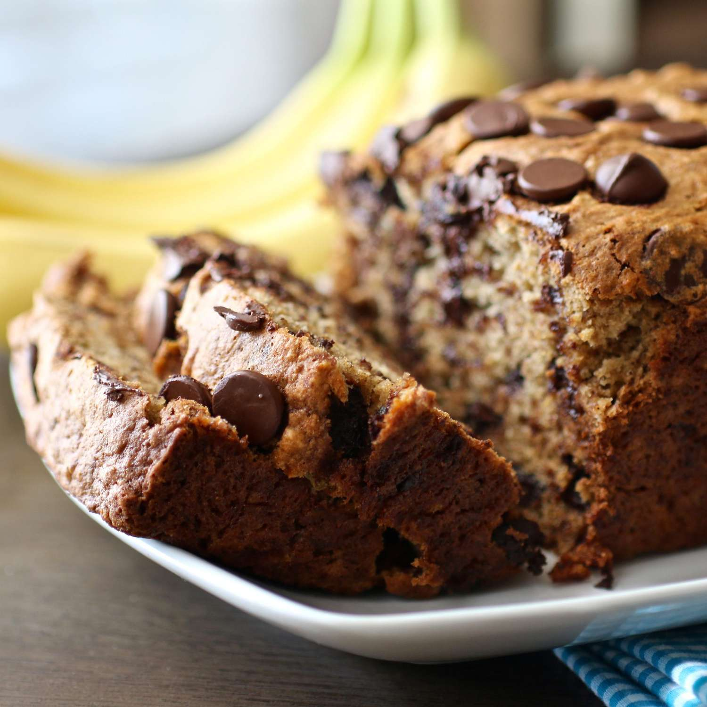

Enjoy this chocolate chip banana bread for breakfast, as a snack, or for dessert. It's quick, easy, and the perfect way to use up extra bananas!
A golden dome of bread, speckled with flecks of brown from the melted chocolate chips, emerges from the oven. Warmth wafts up, carrying the enticing aroma of ripe bananas, toasted nuts (if you've added them), and a hint of cinnamon. Slice it open to reveal a moist, tender crumb speckled with pools of melty chocolate. Each bite is a burst of contrasting textures: the soft, cake-like banana bread, the chewy nuggets of chocolate, and maybe even a delightful crunch from walnuts or pecans. The banana flavor reigns supreme, a sweet and slightly tangy melody intertwined with the rich, cocoa-y notes of the chocolate. A touch of cinnamon adds a gentle warmth, like a cozy blanket on a cool day.
It's not just a snack, it's an experience. Perfect for breakfast with a smear of creamy peanut butter, a comforting afternoon pick-me-up, or a warm dessert with a scoop of vanilla ice cream. And the best part? It's easy to make, a testament to the magic that happens when humble ingredients come together in perfect harmony.
These are the ingredients you'll need to make this crowd-pleasing chocolate chip banana bread recipe: